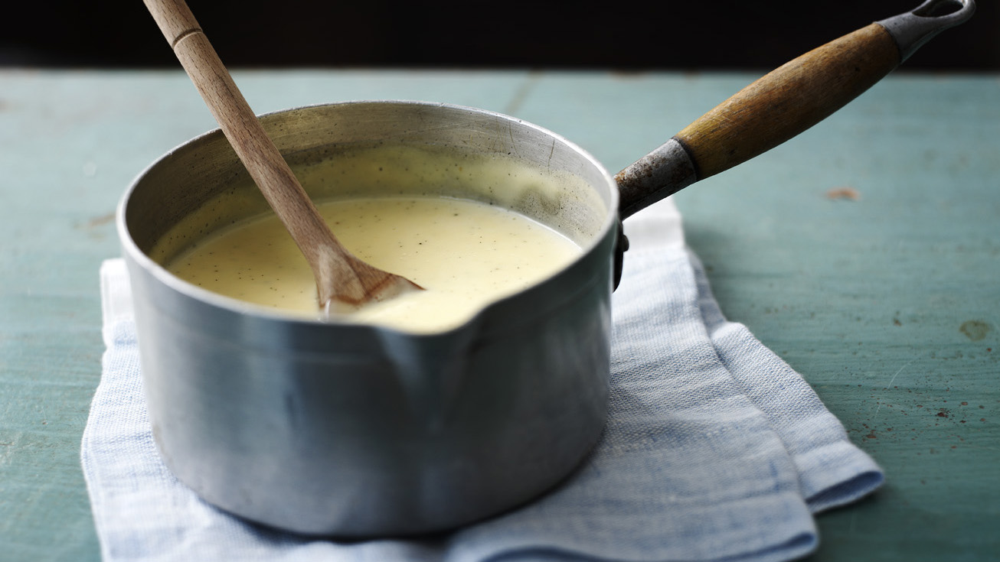

Moonspawn Custard

This sweet dessert is everyone's delight during the late summer times.
It is made from moonspawn, bubbles of an underwater herb's seeds that amass
in their pod until it bursts when it's the right time. These seeds are small
and very starchy.
Ingredients
- a large moonspawn bubble
- 3 spoons of marbleberry syrup
- 2 cups of poppyseed milk
- a piece of zestwood bark
Steps
- In a pot, mix all ingredients except the moonspawn
- Bring the mixture slowly to a boil while squeezing the moonspawn in and stirring vigorously
- When the mixture thickens to your desire, just fish out the bark and you're done!
- Enjoy hot with a piece of salty pastry!